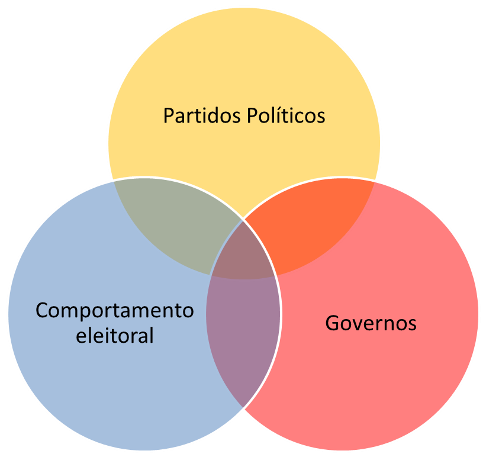

NERD — Núcleo de Estudos em Representação e Democracia
O NERD promove pesquisas sobre a evolução política e eleitoral nos níveis subnacionais, principalmente o municipal, e sobre a relação dessa evolução com o desenvolvimento.
De onde vem e o que faz
O grupo aborda a interseção entre três grandes dimensões da análise de sistemas políticos democráticos: governos, comportamento eleitoral e partidos políticos. A partir dos estudos sobre comportamento dos eleitores, integra achados empíricos às teorias sobre estratégias dos partidos nas administrações públicas subnacionais, e dialoga com análises sobre reeleição de prefeitos, ideologia partidária e gastos públicos no Brasil.
As atividades do NERD atendem a uma demanda concreta: há escassez de informação empírica sobre as características, o funcionamento e o desempenho das instituições políticas no nível municipal, e sobre a interação entre a dimensão política e o desenvolvimento socioeconômico.
O núcleo começou em 2011 com o projeto "Competição eleitoral nos municípios brasileiros", seguiu com o projeto CNPq "Poder local, partidos políticos e eleições municipais no Brasil pós-1988" e hoje é financiado pela FAPERJ com o projeto "Petro rendas e política local".

- Difundir os resultados das pesquisas no âmbito acadêmico e fora dele — encontros, seminários, mini-cursos.
- Promover a participação de alunos de graduação (iniciação científica) e de pós-graduação nas atividades do núcleo.
- Organizar e compartilhar bases de dados que subsidiem pesquisas acadêmicas e demandas de instituições públicas e privadas, formadores de opinião e público em geral.
- Participar de editais de financiamento de pesquisa e de atividades de extensão.
16 integrantes
Vitor de Moraes Peixoto
Professor Associado Universidade Estadual do Norte Fluminense Darcy Ribeiro Centro de Ciências do Homem Laboratório de Estudos da Sociedade Civil e do Estado
Renato Barreto de Souza
Professor do Instituto Federal Fluminense Pós-doutorando do Programa de Pós-Graduação em Sociologia Política Universidade Estadual do Norte Fluminense Darcy Ribeiro Laboratório de Estudos do Estado e da Sociedade Civil
Patricia de Oliveira Burlamaqui
Pós-doutoranda do Programa de Pós-Graduação em Sociologia Política Universidade Estadual do Norte Fluminense Darcy Ribeiro Laboratório de Estudos do Estado e da Sociedade Civil
Ralph André Crespo
Doutorando do Programa de Pós-Graduação em Sociologia Política Universidade Estadual do Norte Fluminense Darcy Ribeiro Laboratório de Estudos do Estado e da Sociedade Civil
Jheniffer Vieira de Almeida
Doutoranda do Programa de Pós-Graduação em Sociologia Política Universidade Estadual do Norte Fluminense Darcy Ribeiro Laboratório de Estudos do Estado e da Sociedade Civil
Raphael de Mello Veloso
Doutorando do Programa de Pós-Graduação em Sociologia Política Universidade Estadual do Norte Fluminense Darcy Ribeiro Laboratório de Estudos do Estado e da Sociedade Civil
Gisele Braga Bastos
Doutoranda do Programa de Pós-Graduação em Sociologia Política Universidade Estadual do Norte Fluminense Darcy Ribeiro Laboratório de Estudos do Estado e da Sociedade Civil
Jessica Matheus de Souza
Doutoranda do Programa de Pós-Graduação em Sociologia Política Universidade Estadual do Norte Fluminense Darcy Ribeiro Laboratório de Estudos do Estado e da Sociedade Civil
Wallace da Silva Mello
Doutorando do Programa de Pós-Graduação em Sociologia Política Universidade Estadual do Norte Fluminense Darcy Ribeiro Laboratório de Estudos do Estado e da Sociedade Civil
Thiago Pimentel Soares
Mestrando do Programa de Pós-Graduação em Sociologia Política Universidade Estadual do Norte Fluminense Darcy Ribeiro Laboratório de Estudos do Estado e da Sociedade Civil
Rafael Soares Salles
Mestrando do Programa de Pós-Graduação em Sociologia Política Universidade Estadual do Norte Fluminense Darcy Ribeiro Laboratório de Estudos do Estado e da Sociedade Civil
João Gabriel Ribeiro Pessanha Leal
Mestrando do Programa de Pós-Graduação em Ciência Política Universidade Federal do Estado do Rio de Janeiro
Larissa Martins Marques
Graduanda do Curso de Administração Pública Universidade Estadual do Norte Fluminense Darcy Ribeiro Laboratório de Estudos do Estado e da Sociedade Civil
Matheus Virginio Harduim Machado
Graduando do Curso de Ciências Sociais Universidade Estadual do Norte Fluminense Darcy Ribeiro Laboratório de Estudos do Estado e da Sociedade Civil
Marcos Paulo Almeida Caldas
Graduando do Curso de Administração Pública Universidade Estadual do Norte Fluminense Darcy Ribeiro Laboratório de Estudos do Estado e da Sociedade Civil
Lara Bernardo de Oliveira
Graduanda do Curso de Ciências Sociais Universidade Estadual do Norte Fluminense Darcy Ribeiro Laboratório de Estudos do Estado e da Sociedade Civil
Localização
Universidade Estadual do Norte Fluminense Darcy Ribeiro Centro de Ciências do Homem — CCH — Sala 108-B Av. Alberto Lamego, 2000 — Parque Califórnia Campos dos Goytacazes — RJ — CEP 28013-602 Tel. (22) 2739-7040